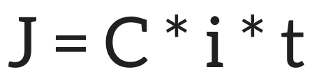

Início
Simulador Financeiro
Cursos
Metas Financeiras
Conversor de Moedas
Sair
Início
Simulador Financeiro
Cursos
Metas Financeiras
Conversor de Moedas
Sair
- Macroeconomia
- Microeconomia
- Política Monetária e Fiscal
- Sistema Financeiro
- Economia Ambiental
Cursos
- Prova
Teste seu conhecimento
Macroeconomia
Ramo da economia que estuda, em escala global e por meios estatísticos e matemáticos, os fenômenos econômicos e sua distribuição.
Produto Interno Bruto (PIB)
O PIB é a soma de todos os bens e serviços finais produzidos por um
país, estado ou cidade, geralmente em um ano. Todos os países calculam
o seu PIB nas suas respectivas moedas.
O PIB mede apenas os bens e serviços finais para evitar dupla
contagem. Se um país produz R$ 100 de trigo, R$ 200 de farinha de
trigo e R$ 300 de pão, por exemplo, seu PIB será de R$ 300, pois os
valores da farinha e do trigo já estão embutidos no valor do pão.
Os bens e serviços finais que compõem o PIB são medidos no preço em
que chegam ao consumidor. Dessa forma, levam em consideração também os
impostos sobre os produtos comercializados.
O PIB desempenha um papel central na mensuração do crescimento
econômico e na comparação entre países. Um aumento no PIB geralmente
indica expansão econômica, enquanto uma diminuição sugere contração.
No entanto, é importante reconhecer as limitações do PIB, como a falta
de consideração de fatores como distribuição de renda, qualidade de
vida e impacto ambiental.
Em resumo, o PIB é uma ferramenta valiosa para avaliar a produção e a
demanda econômicas, fornecendo insights essenciais sobre o
desenvolvimento e o desempenho econômico de uma nação.
Inflação
Inflação é o nome dado ao aumento dos preços de produtos e serviços. Ela é calculada pelos índices de preços, comumente chamados de índices de inflação. O IBGE produz dois dos mais importantes índices de preços: o IPCA, considerado o oficial pelo governo federal, e o INPC.
Para que servem o IPCA e o INPC?
O propósito de ambos é o mesmo: medir a variação de preços de uma cesta de produtos e serviços consumida pela população. O resultado mostra se os preços aumentaram ou diminuíram de um mês para o outro.
A cesta é definida pela Pesquisa de Orçamentos Familiares - POF, do IBGE, que, entre outras questões, verifica o que a população consome e quanto do rendimento familiar é gasto em cada produto: arroz, feijão, passagem de ônibus, material escolar, médico, cinema, entre outros.
Os índices, portanto, levam em conta não apenas a variação de preço de cada item, mas também o peso que ele tem no orçamento das famílias.
Qual é a diferença entre eles?
A sigla INPC corresponde ao Índice Nacional de Preços ao Consumidor. A sigla IPCA corresponde ao Índice Nacional de Preços ao Consumidor Amplo. A diferença entre eles está no uso do termo “amplo”. O IPCA engloba uma parcela maior da população. Ele aponta a variação do custo de vida médio de famílias com renda mensal de 1 e 40 salários mínimos. O INPC verifica a variação do custo de vida médio apenas de famílias com renda mensal de 1 a 5 salários mínimos. Esses grupos são mais sensíveis às variações de preços, pois tendem a gastar todo o seu rendimento em itens básicos, como alimentação, medicamentos, transporte etc.
Por que se fala tanto em IPCA?
O governo federal usa o IPCA como o índice oficial de inflação do Brasil. Portanto, ele serve de referência para as metas de inflação e para as alterações na taxa de juros.
Como ele é calculado?
O IBGE faz um levantamento mensal, em 13 áreas urbanas do País, de, aproximadamente, 430 mil preços em 30 mil locais. Todos esses preços são comparados com os preços do mês anterior, resultando num único valor que reflete a variação geral de preços ao consumidor no período.
Poder de compra
Se a variação do seu salário, de um ano para o outro, for menor do que o IPCA, você perde seu poder de compra, pois os preços sobem mais do que a sua renda. Se a inflação e o seu salário têm a mesma variação, seu poder de compra se mantém. Se você, porém, receber um aumento acima do IPCA, seu poder de compra aumentará.
Microeconomia
A microeconomia é um ramo das ciências econômicas que estuda o comportamento econômico individual, focando somente em mercados específicos e nos movimentos de produtores e consumidores, sem levar em conta o conjunto geral da economia.
Lei da Oferta e da demanda
A Lei da Oferta e Demanda é um conceito que busca explicar a formação e a variação nos preços praticados de produtos e serviços em um determinado mercado. A Lei da Oferta e Demanda foi citada pela primeira vez pelo economista Adam Smith, no século XVIII. Ele afirmava que o preço de um produto ou serviço é determinado pelo equilíbrio entre a quantidade oferecida pelos produtores e a quantidade procurada pelos consumidores. Essa lei é uma das principais teorias da economia, sendo muito utilizada até os dias atuais para entender e explicar o comportamento do mercado. A oferta e procura são representadas graficamente em duas curvas diferentes: A curva da oferta indica a quantidade de um produto que os produtores estão dispostos a vender a preços diferentes; Já a curva da procura representa a quantidade de um produto que os consumidores estão dispostos a comprar a preços diferentes. Então, quando essas curvas se encontram, forma-se o “equilíbrio de mercado”. Ou seja, após a determinação do preço, a quantidade ofertada de produtos ou serviços é igual à quantidade procurada.

Politica Monetaria e Fiscal
Conjunto de decisões por meio das quais os governos e suas instituições (sobretudo os bancos centrais) controlam a oferta de moeda na economia.
Política Monetária
É um instrumento, ao lado da política fiscal, de estabilização econômica, ou seja, que tem por objetivo evitar superaquecimento econômico ou recessão. A política monetária utiliza como instrumento principal a taxa básica de juros de curto prazo, que acaba direta ou indiretamente afetando todos os setores da economia. Outros instrumentos são o nível de depósitos compulsórios requeridos dos bancos ou intervenção direta no volume e nos prazos das operações de crédito. A elevação dos juros básicos tende a desestimular a atividade econômica e é usada normalmente em situações de aumento da inflação. Ao contrário, em conjunturas de recessão, em geral se utiliza uma política monetária expansionista, equivalente à redução dos juros básicos.
Juros
Os juros é o custo do dinheiro ao longo do tempo. É a compensação que uma pessoa, empresa ou governo paga por usar o dinheiro de outra pessoa por um período determinado. Existem dois tipos principais de juros: juros simples e juros compostos.
Juros Simples
Calculados apenas sobre o valor original do empréstimo ou investimento (o principal). A fórmula básica é: Juros (J) = Principal (C) x Taxa de Juros (i) x Tempo (J)
Juros Composto
Calculados sobre o principal e sobre os juros acumulados anteriormente. O valor dos juros para cada período é adicionado ao principal antes de calcular os juros para o próximo período. Esse método resulta em um crescimento exponencial dos juros ao longo do tempo.
Taxa Selic
É a taxa básica de juros da economia brasileira. É estabelecida pelo Comitê de Política Monetária (COPOM), que é parte do Banco Central do Brasil. A Selic é utilizada como referência para diversas operações financeiras no país.
Política Fiscal
A política fiscal refere-se às decisões do governo em relação à arrecadação de receitas e aos gastos públicos para alcançar objetivos macroeconômicos. O principal instrumento da política fiscal são os impostos e os gastos governamentais. A política fiscal pode ser utilizada para reduzir desigualdades econômicas entre cidadãos, setores econômicos e regiões, por meio da transferência de recursos arrecadados com a tributação ou por meio de diferentes incidências de tributação entre pessoas, empresas, setores econômicos e regiões.
Impostos
Impostos são tributos obrigatórios que os cidadãos e as empresas pagam
ao governo para financiar as despesas públicas e permitir a prestação
de serviços e a execução de políticas governamentais. Esses tributos
são uma forma de arrecadar recursos para o Estado e são cobrados com
base em diversas fontes de renda, transações ou propriedades.
Principais impostos:
Imposto de Renda (IR): Incide sobre a renda das pessoas físicas e
jurídicas.
Imposto sobre Produtos Industrializados (IPI): Cobrado sobre a
produção e importação de bens.
Imposto sobre Circulação de Mercadorias e Serviços (ICMS): Estadual,
incide sobre a circulação de mercadorias.
Imposto sobre Serviços (ISS): Municipal, cobrado sobre a prestação de
serviços.
Imposto Predial e Territorial Urbano (IPTU): Municipal, relacionado à
propriedade urbana.
Imposto sobre a Propriedade de Veículos Automotores (IPVA): Estadual,
relacionado à propriedade de veículos.
Sistema Financeiro (SFN)
O Sistema Financeiro Nacional é formado por um conjunto de regras e instituições que buscam reunir poupadores e tomadores de recursos, de forma a permitir um fluxo de recursos necessário ao giro da economia. Esse sistema é formado por diversos participantes. Há as instituições normativas e fiscalizadoras e os intermediários financeiros
Estrutura do sistema financeiro nacional
Os principais componentes do SFN são:
Conselho Monetário Nacional (CMN)
Órgão deliberativo máximo do SFN, estabelece as diretrizes gerais das políticas monetária e cambial e creditícia, regula as condições de funcionamento das instituições financeiras
Banco Central (BCB)
Órgão executivo central do SFN, responsável pela fiscalização e pelo cumprimento das disposições que regulam o funcionamento do sistema, de acordo com as normas expedidas pelo CMN
Conselho de Valores Mobiliários (CVM)
Assegura o funcionamento eficiente e regular dos mercados de bolsa e balcão (Bolsa de valores)
Instituições financeiras
Bancos Comerciais: Instituições que aceitam depósitos e concedem
empréstimos, atuando como intermediários financeiros.
Cooperativas de Crédito: Organizações sem fins lucrativos, de
propriedade dos membros, que oferecem serviços bancários.
Corretoras de Valores: Facilitam a compra e venda de títulos e outros
instrumentos financeiros.
Seguradoras: Fornecem serviços de seguro para proteger contra riscos
financeiros.
Fintechs: Empresas que utilizam tecnologia para fornecer serviços
financeiros de maneira inovadora.
Economia Ambiental
A economia ambiental é um campo interdisciplinar que aplica princípios econômicos à gestão dos recursos naturais e ao entendimento dos problemas ambientais. A Economia Ambiental defende que os recursos naturais não representam, a longo prazo, um entrave para o crescimento econômico. Para esta vertente a solução da problemática ambiental está em maximizar o valor dos recursos por meio da análise detalhada dos efeitos que a exploração ambiental vem causando.
Protocolo de Kyoto
O Protocolo de Kyoto foi um tratado internacional destinado a enfrentar as mudanças climáticas, particularmente o aumento das concentrações de gases de efeito estufa na atmosfera. O acordo foi estabelecido durante a Terceira Conferência das Partes (COP 3) da Convenção-Quadro das Nações Unidas sobre Mudanças Climáticas (UNFCCC), realizada em Kyoto, Japão, em 1997. O protocolo entrou em vigor em 16 de fevereiro de 2005 e expirou em 2012.
Acordo de Paris
O Acordo de Paris é um tratado internacional que surgiu durante a Conferência das Nações Unidas sobre as Mudanças Climáticas (COP21), realizada em dezembro de 2015, na cidade de Paris, França. Este acordo representa um esforço global para lidar com as mudanças climáticas e reduzir as emissões de gases de efeito estufa, com o objetivo de limitar o aumento da temperatura global. O acordo busca limitar o aumento da temperatura global a bem abaixo de 2 graus Celsius em relação aos níveis pré-industriais. Além disso, esforços serão envidados para limitar o aumento a 1,5 grau Celsius. O Acordo de Paris é considerado um marco histórico por unir países em um esforço global para combater as mudanças climáticas
Economia Circular
A economia circular é um modelo econômico que visa minimizar o
desperdício e otimizar o uso de recursos. Ao contrário do modelo
linear tradicional, em que os produtos são fabricados, usados e
descartados, a economia circular promove a ideia de que os materiais e
produtos devem ser continuamente reutilizados, reparados e reciclados,
criando um ciclo sustentável.
Principais características da economia circular: Design Sustentável,
Reutilização, Reciclagem e Recuperação de Materiais, Cadeias de
Abastecimento Sustentáveis, Economia de Compartilhamento, Biomimética,
Consciência do Consumidor